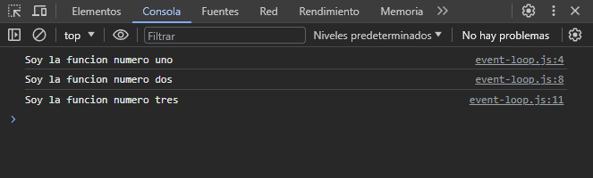
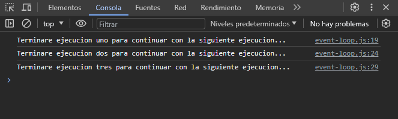
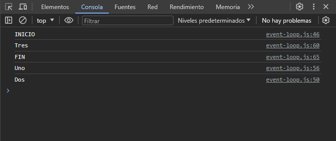

En resumen, todo lo que sucede dentro de la pila de ejecución de funciones es secuencial. Esta es la parte sincrona de JavaScript. El procesamiento de JavaScript se asegura de que todo lo que esta en la pila se ejecuta antes de comenzar algo nuevo.
La asincronía es uno de los pilares fundamentales de JavaScript, ya que es un lenguaje de programación de un solo subproceso o hilo single thread, lo que significa que solo puede ejecutar una cosa a la vez.
Si bien los idiomas de un solo hilo simplifican la escritura de código porque no tiene que preocuparse por los problemas de concurrencia, esto también significa que no puede realizar operaciones largas como el acceso a la red sin bloquear el hilo principal.
Imagina que solicitas datos de una API. Dependiendo de la situación, el servidor puede tardar un tiempo en procesar la solicitud mientras bloquea el hilo principal y hace que la pagina web no responda.
Ahi es donde entra en juego la asincronía que permite realizar largas solicitudes de red sin bloquear el hilo principal. JavaScript fue diseñado para ser ejecutado en navegadores, trabajar con peticiones sobre la red y procesar las interacciones de usuario, al tiempo que mantiene una interfaz fluida.
JavaScript usa un modelo asíncrono y no bloqueante, con un loop de eventos implementando en un solo hilo llamado single thread para operaciones de entrada y salida input/output. JavaScript es altamente concurrente a pesar de emplear un solo hilo.
Single thread y Multi thread
Un hilo la unidad básica de un proceso, cada que abres un programa como el navegador o tu editor de código, se levanta un proceso en tu computadora e internamente este puede tener uno o varios hilos threads ejecutándose para que el proceso funcione.
Operaciones de CPU, entrada y salida
operaciones CPU son aquellas que pasan el mayor tiempo consumiendo procesos del CPU, por ejemplo, la escritura de ficheros. operaciones de entrada y salida son aquellas que pasan la mayor parte del tiempo esperando la respuesta de una petición o recurso, como la solicitud a una API o Base de Datos.
Concurrencia y Paralelismo
concurrencia< es cuando dos o mas tareas progresan simultáneamente, paralelismo es cuando dos o mas tareas se ejecutan al mismo tiempo.
Bloqueante y No Bloqueante
Se refiere a como la fase de espera de las operaciones afectan a nuestra aplicación, bloqueante son aquellas operaciones que no devuelven el control a nuestra aplicación hasta que se ha completado. Por tanto el thread queda bloqueado en estado de espera. No bloqueante son aquellas operaciones que devuelven inmediatamente el control a nuestra aplicación, independientemente del resultado de esta. En caso de que se haya completado, devolverá los datos solicitados. En caso contrario si la operación no ha podido ser satisfecha podría devolver un código de error.
Síncrono y Asíncrono
síncrono es cuando la respuesta sucede en el presente, una operación síncrona esperara el resultado. asíncrono es cuando la respuesta sucede a futuro, una operación asíncrona no esperara el resultado.
Con este concepto, en JavaScript podemos tener:
codigo sincrono y bloqueante
codigo asincrono y no bloqueante
Mecanismos asíncronos en JavaScript
Para controlar la asincronía, JavaScript cuenta con algunos mecanismos: Callbacks, Promises, Async / Await
Callbacks
Una callback, (llamada de vuelta) es una función que se ejecutara después de que otra lo haga. Es un mecanismo para asegurar que cierto código no se ejecute hasta que otro haya terminado. Al ser JavaScript un lenguaje orientado a eventos, los callback son una buena técnica para controlar la asincronía, sin embargo, hay algo llamado callback hell.
Promises
Una promise es un objeto que representa el resultado de una operación asíncrona y tiene 3 estados posibles: pendiente, resuelta y rechazada. Tienen la particularidad de que se pueden encadenar then, siendo el resultado de una promesa, los datos de entrada de otra posible función. Las promise mantienen un código mas legible y mantenible que las callback, ademas tienen un mecanismo para la detección de errores catch que es posible usar en cualquier parte del flujo de datos.
Async / Await
Las promise fueron una gran mejora respecto a las callback para controlar la asincronía en JavaScript, sin embargo pueden llegar a ser muy verbosas a medida que se requieran mas y mas métodos then. Las funciones asíncronas async / await surgen para simplificar el manejo de las promise.
La palabra async declara una función como asíncrona e indica que una promise sera automáticamente devuelta. Podemos declarar como async funciones con nombre, anónimas o funciones flecha.
La palabra await debe ser usado siempre dentro de una función declarada como async y esperara de forma asíncrona y no bloqueante a que una promesa se resuelva o rechace.
Ejemplos JavaScript Sincrono
Como anteriormente lo habíamos explicado, en JavaScript podemos tener código sincrono y bloqueante. El motor de JavaScript mantiene una pila de ejecución, al invocar funciones estas se van agregando a la pila de ejecución, si tenemos 3 funciones, e invocamos las 3 funciones, estas serán agregadas a una pila para poder ejecutarse una por una, una vez ejecutadas, van saliendo de la pila de ejecución.
Veamos el primer ejemplo:
function uno() {
console.log(`Soy la funcion numero uno`)
}
function dos() {
console.log(`Soy la funcion numero dos`)
}
function tres() {
console.log(`Soy la funcion numero tres`)
}
uno()
dos()
tres()
Veamos el resultado:
En el código de ejemplo, definimos 3 funciones con un código a ejecutar, al invocar las 3 funciones, se van agregando a la pila de ejecución, según se vayan invocando se irán ejecutando de manera secuencial.
Veamos otro ejemplo:
function ejecucionUno() {
console.log(`Terminare ejecucion uno para continuar con la siguiente ejecucion...`)
}
function ejecucionDos() {
ejecucionUno()
console.log(`Terminare ejecucion dos para continuar con la siguiente ejecucion...`)
}
function ejecucionTres() {
ejecucionDos()
console.log(`Terminare ejecucion tres para continuar con la siguiente ejecucion...`)
}
ejecucionTres()
En este otro ejemplo, tenemos otras 3 funciones, en la función ejecucionUno() tenemos un mensaje para mostrarlo por consola, en la función ejecucionDos() invocamos la función ejecucionUno() y mostramos un mensaje por consola, en la función ejecucionTres() invocamos la función ejecucionDos() y a la misma vez mostramos un mensaje por consola.
En este ejemplo solo invocamos la función ejecucionTres(), nótese que según la pila de ejecucion, primero se agregara la función ejecucionTres(), dentro de ella tenemos invocada la función ejecucionDos() por lo tanto la siguiente en unirse a la pila es esa función, y dentro de la funciónejecucionDos() invocamos la función ejecucionUno() terminando de agregar a la pila esa función.
En primer lugar, se ejecuta ejecucionUno() y sale de la pila, justo después termina ejecucionDos(), y por ultimo ejecucionTres().
Este es el resultado:
Ejemplos JavaScript Asíncrono
Recordemos que en JavaScript hay código asíncrono y no bloqueante, es decir, hay código que se ejecuta y devuelve inmediatamente el resultado al control del hilo, evitando el bloque, osea, evitando que se ejecute una tarea para ejecutar la siguiente.
function mensajeTarde() {
console.log(`Soy un mensaje retardado...`)
}
function mensajeRapido() {
console.log(`Soy un mensaje rapidooooooooo...`)
}
setTimeout(mensajeTarde, 3000)
mensajeRapido()
En este ejemplo hacemos uso del temporizador setTimeout() para simular un proceso asincrono. Tenemos 2 funciones llamadas mensajeTarde() y otra función llamada mensajeRapido().
Con el temporizador retardamos la ejecucion de la función mensajeTarde() con un retraso de 3000 milisegundos, osea, 3 segundos. Luego se ejecuta la funcion mensajeRapido().
Ahora bien veamos cual es el resultado:
Al ejecutar la aplicación lo primero en ejecutarse es la función mensajeRapido(), inmediatamente devuelve el resultado. Al pasar unos segundos se ejecuta la otra funcion mensajeTarde(), devolviendo su resultado.
Veamos el resultado al pasar unos segundos:
Veamos otro ejemplo:
console.log(`INICIO`)
function dos() {
setTimeout(() => {
console.log(`Dos`)
}, 1000)
}
function uno() {
setTimeout(() => {
console.log(`Uno`)
}, 0)
dos()
console.log(`Tres`)
}
uno()
console.log(`FIN`)
Analicemos el codigo, tenemos dos funciones asíncronas, y tenemos mensajes por mostrar en consola, tenemos dos funciones llamadas uno() & dos(), en la funcion dos() tenemos un codigo asíncrono con un mensaje que mostrar en consola. En la funcion uno() tenemos un codigo asíncrono con un mensaje que mostrar en consola, y a la vez invocamos la funcion uno() y por ultimo mostramos un mensaje en consola.
Invocamos la funcion uno() y pensemos como seria el resultado, si pensamos a primera vista que el codigo se ejecutaría de forma secuencial, el resultado seria:
INICIO
uno
Dos
Tres
FIN
Pero recordemos que al ser un codigo asíncrono no bloqueante, la ejecucion de la funcion uno() inmediatamente devolvería los resultados según vaya ejecutando el proceso dentro de la funcion. Entonces, tomando en cuenta eso, primero se ejecutarían los console.log() de forma secuencial: "INICIO", "Tres" y "FIN", luego entraría el codigo asíncrono esperando a devolver el resultado, continuaría devolviendo el mensaje "Uno" ya que tiene un tiempo de espera de 0 milisegundos, y por ultimo el mensaje "Dos" que tiene un retraso de ejecucion de 1 segundo.
Con este ejemplo podemos observar que el codigo asincrono no bloqueante no espera a que se termine de ejecutar un proceso para continuar con el siguiente, inmediatamente devuelve el resultado de las tareas o recursos que se este ejecutando en el momento. A diferencia del codigo sincrono bloqueante.
Ejemplos JavaScript Asíncrono con funcion Callback
Veamos como podemos tener codigo asincrono con el mecanismo de una callback, para empezar, una funcion callback es una funcion que se pasa a otra funcion como un argumento, que luego se invoca dentro de la funcion externa para completar algún tipo de rutina o acción.
Veamos un ejemplo de como usar un callback asincrono:
function tablaDeMultiplicar(value, limite, callback) {
console.log(`Tabla del ${value}`)
console.log(`-------------`)
let i = 1
let rs = 0
for(i; i <= limite; i++) {
rs = value * i
console.log(`${value} * ${i} = ${rs}`)
}
console.log(`-------------`)
setTimeout(() => {
callback()
}, 0 | (Math.random() * 1000))
}
Vamos a analizar el codigo anterior, tenemos una funcion como comúnmente se declara una funcion, antes, el objetivo de esta funcion es mostrar una tabla de multiplicar. Esta funcion recibe 3 parámetros, 2 de ellos son "value", "limite", por ultimo tenemos un callback, recordemos que un callback es una funcion que se pasa como un argumento a otra funcion.
El parámetro "value" es la tabla de multiplicar que queremos mostrar. El parámetro "limite" hace referencia hasta que numero queremos mostrar la multiplicación, esto lo haremos con un bucle. Seguido, definimos 2 variables llamadas "i" haciendo referencia al iterador del bucle, "rs" hace referencia al resultado de la multiplicación. Hemos definido la variable "i" fuera del bucle for ya que luego la utilizaremos, y al definirla dentro del bucle for no podremos acceder a ella por su ámbito local dentro de la funcion for.
Continuando, definimos un bucle for, como ya hemos definido la variable "i" ya no es necesario declararla en el bucle, solo basta con poner la variable, la definimos con un valor de "1" ya que la tabla de multiplicar empezara desde el "1" hasta el limite que definimos, y por cada vuelta se ira aumentando de uno en uno hasta llegar al "limite" que definimos en el parámetro de la funcion.
En la variable "rs" guardaremos el resultado de la multiplicación por cada vuelta que hará el bucle. Osea, el parámetro "value" lo multiplicaremos por el "iterador", osea la variable "i". Seguido, de una vez mostramos el resultado por consola. Y salimos del bucle.
Para hacer de esto asincrono, basta con usar un temporizador llamado setTimeout(). Dentro del temporizador usamos el parámetro llamado callback, es aquí donde finalmente llamamos la funcion callback, a esta funcion también le podemos mandar argumentos para cuando vayamos a invocar un callback hacer uso de ellos. Para definir un tiempo exacto en el que se tardara en ejecutarse la funcion callback, hacemos una operación usando Math.random() * 1000, asi cada llamada tardara diferente tiempo.
Hasta aquí tenemos una funcion donde mandamos un callback como parámetro a otra funcion. Invocaremos esta funcion y veremos como es su uso y también veremos el famoso "callback hell".
tablaDeMultiplicar(1, 10, () => {
})
Primero invocamos la funcion como normalmente lo haríamos, indicamos los primeros 2 parámetros, osea, el "value" y "limite", el tercer parámetro es un callback, osea una funcion callback como parámetro. En este caso puede ser una funcion declarada o una funcion de flecha. Hasta aquí todo normal, pero queremos nuevamente invocar nuestra funcion, es aca donde se invoca la funcion dentro de la funcion callback:
tablaDeMultiplicar(1, 10, () => {
tablaDeMultiplicar(2, 10, () => {
})
})
Podemos observar que en la funcion callback, se va encadenando cada llamada de la funcion tablaDeMultiplicar() dentro de la funcion callback, y asi sucesivamente...
tablaDeMultiplicar(1, 10, () => {
tablaDeMultiplicar(2, 10, () => {
tablaDeMultiplicar(3, 10, () => {
})
})
})
Por cada llamada a la funcion dentro del callback, se va incrementando nuestro codigo, imaginemos que queremos mostrar todas las tablas de multiplicar hasta la tabla del numero 10:
tablaDeMultiplicar(1, 10, () => {
tablaDeMultiplicar(2, 10, () => {
tablaDeMultiplicar(3, 10, () => {
tablaDeMultiplicar(4, 10, () => {
tablaDeMultiplicar(5, 10, () => {
tablaDeMultiplicar(6, 10, () => {
tablaDeMultiplicar(7, 10, () => {
tablaDeMultiplicar(8, 10, () => {
tablaDeMultiplicar(9, 10, () => {
tablaDeMultiplicar(10, 10, () => {
})
})
})
})
})
})
})
})
})
})
Por cada llamada, se va incrementando el codigo y se va formando como una pirámide, a esto se le conoce como "callback hell". Imaginemos que queramos mostrar hasta la tabla del numero 100. Y suele suceder en otras aplicaciones en la cual estemos consumiendo una API o Base de Datos donde sean muchos datos mas de 100, esta bien usarse si no es mucho dato que consumir, sin embargo hay mejores opciones donde podemos optimizar el codigo.
En conclusion, un callback es muy sencillo de comprender y de utilizar. Recordar siempre que un callback es una funcion que se pasa como argumento a otra funcion. Y para usar este callback, primero, se debe de hacer "algo" para después llamar la funcion callback y al invocar la funcion en cada callback se pueda procesar el "algo" que hemos determinado.
Ejemplos JavaScript Asíncrono con Promesas
El objeto Promise representa la eventual finalización o falla de una operación asincronica y su valor resultante.
Las Promise mantienen un codigo mas legible y mantenible que las callback, ademas tienen un mecanismo para la detección de errores catch que es posible usar en cualquier parte del flujo de datos.
Veamos un ejemplo de como usar Promise en codigo asincrono:
const tablaDeMultiplicar = (value) => {
if (typeof value !== "number") {
return Promise.reject(`Solo se permiten valores numericos`)
}
console.log(`Tabla del ${value}`)
console.log(`------------`)
for(let i = 1; i <= 10; i++) {
let rs = value * i
console.log(`${value} * ${i} = ${rs}`)
}
return new Promise((resolve) => {
setTimeout(() => {
resolve()
}, 0 | (Math.random() * 2000))
})
}
En este ejemplo, el objetivo es mostrar un tabla de multiplicar según el valor que indiquemos. Definimos una funcion flecha con el nombre tablaDeMultiplicar() el cual recibe un parámetro de un numero en relación a la tabla de multiplicar.
Al utilizar promesas existe 3 posibles estados: pendiente, resuelta y rechazada. Una promesa originalmente esta en estado pendiente, cuando llamamos a resolve() entonces la promesa pasa a estar en estado resuelta, si llamamos a reject() entonces la promesa pasa a estar en estado rechazada. Esto lo entenderemos en el siguiente párrafo.
Cuando usamos promesas, nosotros podemos retornar, devolver esa promesa, y esa promesa recibe 2 parámetros, la parte que resuelve, osea, resolve, y la parte que rechaza, osea, reject, las cuales son funciones.
En la funcion tablaDeMultiplicar() que hemos creado, validamos que el parámetro sea un numero y no una cadena de texto con las siguientes lineas de codigo:
const tablaDeMultiplicar = (value) => {
if (typeof value !== "number") {
return Promise.reject(`Solo se permiten valores numericos`)
}
}
En la validación, rechazamos con Promise.reject() en caso de que el parámetro no sea un numero. Podemos usar el método estático del constructor Promise llamado reject(), el cual devuelve una promesa que se rechaza por la validación que definimos. Hasta aquí ya tenemos resuelta el estado que rechaza la promesa.
Continuando, realizamos "algo", osea, definimos lo que queremos que se procese al invocar la funcion, en este caso usamos un bucle for para ir desde el "1" hasta el "10" y mostrar la tabla de multiplicar. Dentro del bucle definimos una variable llamada "rs" para almacenar el resultado de la multiplicación por cada vuelta del bucle, y mostrar en pantalla los datos de la tabla de multiplicar.
Posterior a esto, pasamos a la parte que resuelve. Para terminar, en nuestra funcion retornamos una Promesa, pero haciendo uso de su constructor. Su constructor recibe una funcion como parámetro con los valores resolve y reject, que a la vez son funciones también. Como ya tenemos la parte que rechaza, esta vez tendremos la parte que resuelve.
const tablaDeMultiplicar = (value) => {
...
...
...
return new Promise((resolve) => {
setTimeout(() => {
resolve()
}, 0 | (Math.random() * 2000))
})
}
Dentro de la promesa definimos un temporizador, el cual hara que nuestro codigo sea asincrono, dentro del temporizador, invocamos la funcion resolve(), y ya tenemos hecho la parte que resuelve. Hasta aquí hemos terminado la funcion asíncrona que nos devuelve Promesa, ahora veamos como podemos invocarla.
tablaDeMultiplicar(0).then((result) => { }).catch(err => console.error(err))
Como nuestra funcion devuelve promesas, nos puede devolver un rechazo o nos puede devolver el proceso resuelto, por eso al invocar la funcion tablaDeMultiplicar() la encadenamos con otra funcion llamada then() que es donde se muestra la parte resuelta, y con catch() capturamos la parte que rechaza el proceso.
Veamos como quedaría al invocar la funcion tablaDeMultiplicar() una sola vez:
tablaDeMultiplicar(1)
.then(result => {
})
.catch(err => console.log(err))
Dentro de cada then() recibe un parámetro, en si es el resultado de la promesa, por ello escribimos como parámetro el nombre de "result". Automáticamente se muestra el resultado en pantalla, debido a que en la funcion tablaDeMultiplicar() hemos hecho todo el proceso para mostrar el resultado. Pero que pasa si queremos continuar con la siguiente tabla de Multiplicar?
tablaDeMultiplicar(1)
.then(result => {
tablaDeMultiplicar(2)
})
.then(result => {
})
.catch(err => console.log(err))
Si vemos el codigo, dentro del primer then() que es donde se muestra el primer resultado, es ahi donde volvemos a invocar la funcion tablaDeMultiplicar() y volvemos a encadenar otro then() para mostrar el resultado nuevamente de la ultima invocación de la funcion tablaDeMultiplicar().
Y es asi sucesivamente como podemos encadenar cada promesa resuelta en cada invocación, en caso de encontrar un error, se capturara en catch() y mostrara un mensaje con el error, es decir, se mostrara la promesa rechazada según la validación que definimos.
tablaDeMultiplicar(1)
.then(result => {
tablaDeMultiplicar(2)
})
.then(result => {
tablaDeMultiplicar(3)
})
.then(result => {
tablaDeMultiplicar("hola")
})
.then(result => {
tablaDeMultiplicar(5)
})
.then(result => {
tablaDeMultiplicar(6)
})
.then(result => {
tablaDeMultiplicar(7)
})
.then(result => {
tablaDeMultiplicar(8)
})
.then(result => {
tablaDeMultiplicar(9)
})
.then(result => {
tablaDeMultiplicar(10)
})
.then(result => { })
.catch(err => console.log(err))
Es asi como quedaría el codigo, según vayamos necesitando la información de cada promesa devuelta.
En conclusion, las promesas Promise, fueron una gran mejora respecto a las callbacks para controlar la asincronía en JavaScript, sin embargo pueden llegar a ser muy verbosas a medida que se requieran mas y mas métodos then().
Ejemplos JavaScript Asíncrono con Async / Await
Las funciones asíncronas async / await surgen para simplificar el manejo de las promesas. La palabra async declara una funcion como asíncrona e indica que una promesa sera automáticamente devuelta. Podemos declarar como async funciones declaradas, funciones expresadas, funciones anónimas y funciones flechas.
La palabra await debe de ser usado siempre dentro de una funcion declarada como async y esperara de forma asíncrona y no bloqueante a que una promesa se resuelva o rechace.
Usaremos el mismo ejemplo anterior para ver la diferencia entre usar promesas y usar async / await:
const tablaDeMultiplicar = (value) => {
if (typeof value !== "number") {
return Promise.reject(`Solo se permiten valores numericos`)
}
console.log(`------------`)
console.log(`Tabla del ${value}`)
console.log(`------------`)
for(let i = 1; i <= 10; i++) {
let rs = value * i
console.log(`${value} * ${i} = ${rs}`)
}
return new Promise((resolve) => {
setTimeout(() => {
resolve()
}, 0 | (Math.random() * 2000))
})
}
En pocas palabras, definimos una funcion que nos devuelve una promesa en caso de que se rechace, y en caso de que se resuelva. Devolvemos una promesa que recibe una funcion como parámetro que a su vez recibe otro parámetro donde se resuelve la ejecucion del programa dentro de un temporizador para hacerlo asincrono.
Ahora si veamos como funciona async / await, para eso, creamos otra funcion, en este ejemplo creamos una funcion llamada resultFunctionAsync(), de la cual esta sera nuestra funcion asíncrona donde se mostrara el resultado de la promesa.
const resultFunctionAsync = async () => {
try {
await tablaDeMultiplicar(1)
await tablaDeMultiplicar(2)
await tablaDeMultiplicar(3)
await tablaDeMultiplicar(4)
await tablaDeMultiplicar(5)
await tablaDeMultiplicar(6)
await tablaDeMultiplicar(7)
await tablaDeMultiplicar("jk")
await tablaDeMultiplicar(9)
await tablaDeMultiplicar(10)
} catch (err) {
console.error(err)
}
}
resultFunctionAsync()
Para usar async / await creamos otra funcion donde se mostrara el resultado de la promesa. En este caso usamos una funcion flecha por lo tanto, antes de los paréntesis () escribimos async para definir como funcion asíncrona.
Dentro de la funcion definimos un bloque try ... catch donde invocaremos la funcion que nos devuelve la promesa. Pero antes de invocarla escribimos la palabra await indicando que espere el resultado de la promesa ya sea que se resuelva o se rechace. En caso de que se rechace, se captura la promesa en el bloque catch.
Solo queda invocar la funcion asíncrona para mostrar los resultados de la ejecucion final.